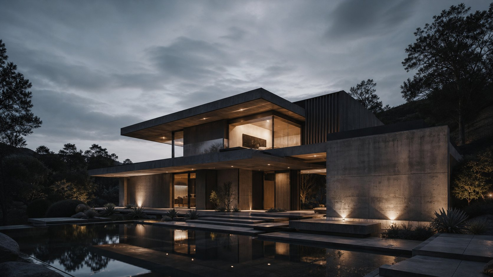

Woodex service
Custom Furniture & Joinery
Made to fit the room exactly.
We shape the brief, visual direction, scope, materials, and delivery around the way this space needs to work.

What you get
Clear from
the start.
01 / DISCOVER
We understand the space, brief, timeline, and priorities.
02 / SHAPE
We create a clear design direction and visible project scope.
03 / DELIVER
We stay connected through build, details, and handover.